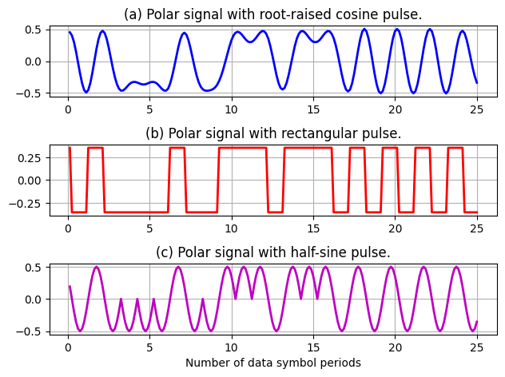
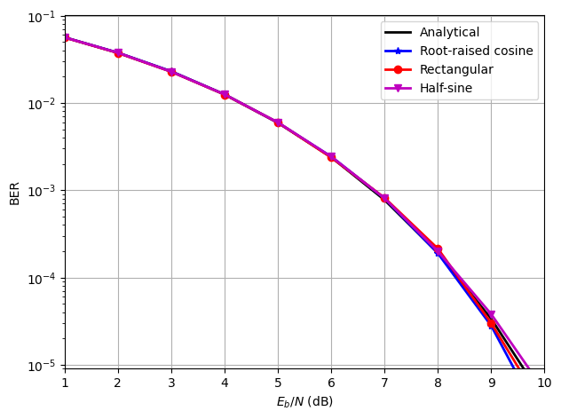
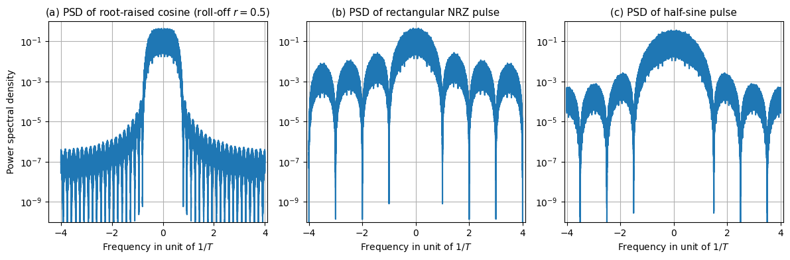
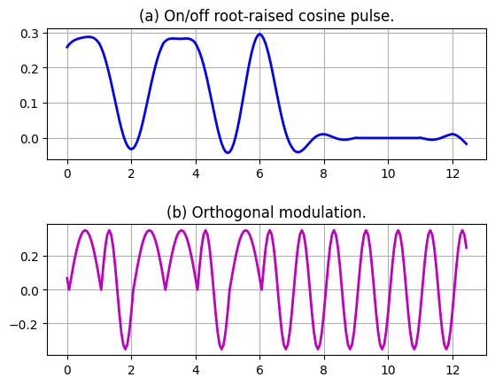
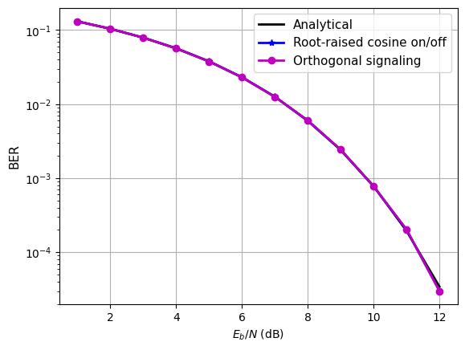
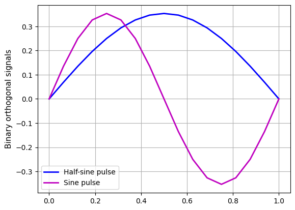
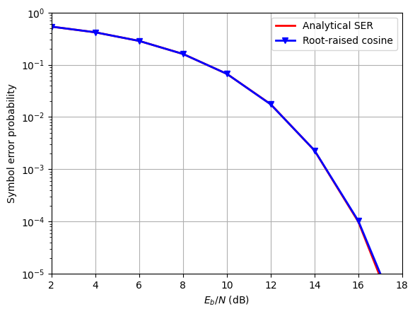
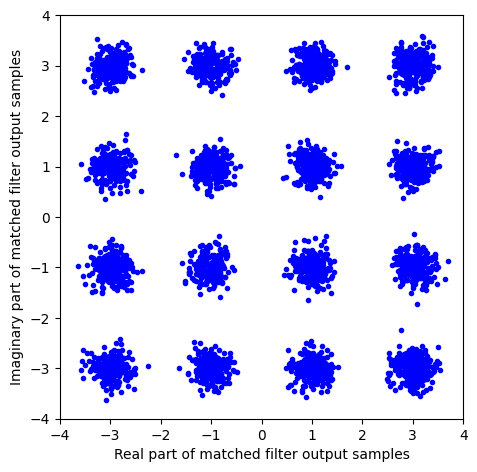
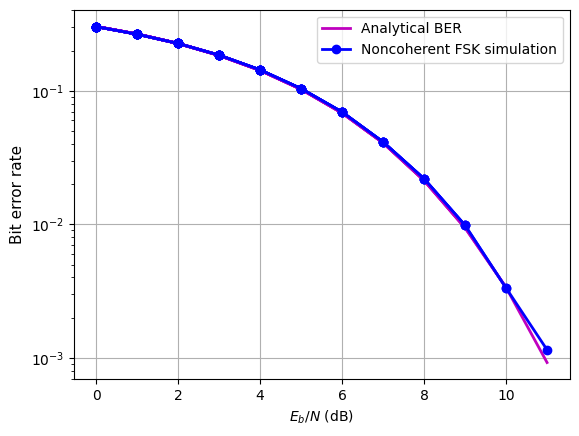
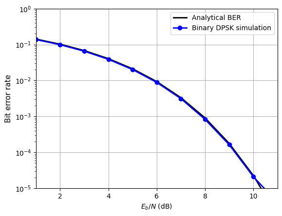

9.12.1 Computer Exercise 9.1: Binary Polar Signaling with Different Pulses#
Note: Refer to the corresponding sections of textbook about the setup.
import numpy as np
import matplotlib.pyplot as plt
from scipy.signal import welch, get_window
from scipy.special import erfc
def rcosdesign(beta, span, sps):
'''
This function returns the coefficients (weights) corresponding to a square-
root raised cosine FIR filter with rolloff factor 'beta'. The /pulse is
truncated to 'span' symbols, each symbol period contains 'sps' samples. The
filter order, sps * span, must be even. The filter energy is 1.
Args:
beta: the roll-off factor
span: number of symbols in the filter
sps: samples per symbol.
Returns:
weights: filter coefficients, whose energy is 1.
'''
assert sps > 1, 'SPS must be > 1, got %d instead' % sps
assert type(sps)==int, (
'SPS must be integer, got %s instead' % type(sps))
assert span > 1 and (span % 2 == 0), (
'span must be an even number >= 1, got %d instead' % span)
assert type(span)==int, (
'span must be integer, got %s instead' % type(span))
assert beta >= 0, 'beta must be >= 0, got %f instead' % beta
weights = np.zeros(span * sps + 1)
# compute filter coefficients
for index, n in enumerate(np.arange(-span//2*sps,(span//2*sps)+1)):
if (n == 0): # filter center
weights[index] = (1/np.sqrt(sps))*((1-beta)+(4*beta/np.pi))
elif (np.abs(n*4*beta) == sps):
weights[index] = (beta/np.sqrt(2*sps))*(
(1+(2/np.pi))*np.sin(np.pi/(4*beta))+
(1-(2/np.pi))*np.cos(np.pi/(4*beta)))
else:
weights[index] = (1/np.sqrt(sps))*(
(np.sin(np.pi*n*(1-beta)/sps)) +
(4*beta*n/sps)*(np.cos(np.pi*n*(1+beta)/sps))
) / ( (np.pi*n/sps)*(1-(4*beta*n/sps)**2) )
# scale the coefficients
weights = weights/np.sum(weights**2)
return weights
# This exercise performs simulation of binary baseband polar transmission in
# AWGN channel. The program generates polar baseband signals using 3 different
# pulse shapes (root-raised cosine (r=beta=0.5), rectangular, half-sine) and
# estimate the bit error rate (BER) at different Eb/N for display
L = 1000000 # Total data symbols to find BER
# To display the pulse shape, we oversample the signal by factor f_ovsamp=8
f_ovsamp = 8 # Oversampling factor vs data rate
delay_rc = 3 # Delay RRC pulse by 3 symbols
# Generating root-raised cosine pulseshape (roll-off factor beta, e.g. 0.5)
prcos = np.convolve(
np.array([1]), rcosdesign(beta=0.5, span=delay_rc*2, sps=f_ovsamp))
prcos = prcos / np.linalg.norm(prcos)
pcmatch = prcos[::-1] # matched filter impulse response to RRC
# Generating a rectangular pulse shape
prect = np.ones(f_ovsamp); prect = prect / np.linalg.norm(prect)
prmatch = prect[::-1] # matched filter impulse response to RECT pulse
# Generating a half-sine pulse shape
psine = np.sin(np.arange(f_ovsamp) * np.pi / f_ovsamp)
psine = psine / np.linalg.norm(psine)
psmatch = psine[::-1] # matched filter impulse response to half-sine
# Generating random signal data of length L for polar signaling
s_data = 2 * np.round(np.random.rand(L)) - 1
# upsample to match 'fictitious oversampling'=f_ovsamp/T (T=1 symbol duration)
s_up = np.stack([s_data] + [s_data*0]*(f_ovsamp-1),axis=-1).reshape(-1)
# Identify the decision delays due to pulse shaping and matched filters
delayrc = 2 * delay_rc * f_ovsamp
delayrt = f_ovsamp - 1; delaysn = f_ovsamp - 1
# Generate polar signaling of various different pulse-shapes
xrcos = np.convolve(s_up, prcos)
xrect = np.convolve(s_up, prect)
xsine = np.convolve(s_up, psine)
t = np.arange(1, 201) / f_ovsamp
plt.subplot(311)
figwave1 = plt.plot(t,xrcos[delayrc//2:delayrc//2+200],'b',linewidth=2)
plt.title('(a) Polar signal with root-raised cosine pulse.'); plt.grid()
plt.subplot(312)
figwave2 = plt.plot(t,xrect[delayrt:delayrt+200],'r',linewidth=2)
plt.title('(b) Polar signal with rectangular pulse.'); plt.grid()
plt.subplot(313)
figwave3 = plt.plot(t,xsine[delaysn:delaysn+200],'m',linewidth=2)
plt.title('(c) Polar signal with half-sine pulse.'); plt.grid()
plt.xlabel('Number of data symbol periods')
plt.tight_layout(pad=1.0); plt.show() # Set spacing between subfigures and plot

# Find the signal lengths
Lrcos = len(xrcos); Lrect = len(xrect); Lsine = len(xsine)
BER = []; Q = []; Eb2N = [] # Define arrays of BER and Q vs x-axis (Eb/N0)
noiseq = np.random.randn(Lrcos) # generate baseline noise sequence
# Generating the channel noise (AWGN)
for i in range(10):
Eb2N.append(i+1) # (Eb/N in dB)
Eb2N_num = 10 ** (Eb2N[i] / 10) # Eb/N in numeral
Var_n = 1 / (2 * Eb2N_num) # 1/SNR is the noise variance
signois = np.sqrt(Var_n) # standard deviation
awgnois = signois * noiseq # AWGN noise generation
# Add white Gaussian noise to signals at the channel output
yrcos = xrcos + awgnois; yrect = xrect + awgnois[:Lrect]
ysine = xsine + awgnois[:Lsine]
# Apply matched filters first
z1 = np.convolve(yrcos, pcmatch); z2 = np.convolve(yrect, prmatch)
z3 = np.convolve(ysine, psmatch); del yrect; del yrcos; del ysine # clear memory
# Sampling received signals and acquire decision samples
z1 = z1[delayrc::f_ovsamp][:L]; z2 = z2[delayrt::f_ovsamp][:L]
z3 = z3[delaysn::f_ovsamp][:L]
# Decision based on the sign of the samples for polar
dec1 = np.sign(z1); dec2 = np.sign(z2); dec3 = np.sign(z3)
# Now compare against the original data to compute BER for the 3 pulse types
BER.append([np.sum(np.abs(s_data - dec1)) / (2 * L),
np.sum(np.abs(s_data - dec2)) / (2 * L),
np.sum(np.abs(s_data - dec3)) / (2 * L)])
Q.append(0.5*erfc(np.sqrt(Eb2N_num))) # Compute the Analytical BER
BER = np.array(BER)
fig2 = plt.figure()
figber=plt.semilogy(Eb2N,Q,'k-',Eb2N,BER[:,0],'b-*',
Eb2N,BER[:,1],'r-o',Eb2N,BER[:,2],'m-v',linewidth=2)
plt.legend(['Analytical','Root-raised cosine','Rectangular','Half-sine'])
plt.xlabel(r'$E_b/N$ (dB)'); plt.ylabel('BER'); plt.grid()
plt.axis([1, 10, .9e-5, 1.01e-1]);
plt.tight_layout(pad=1.0); plt.show() # Set the spacing between subfigures

hamming_Wn = get_window('hamming', np.floor(len(xrcos)/4.5).astype(int))
# Default Length of FFT (nfft) is the greater of
# 256 or the next power of 2 greater than the length of the segments.
Lfft = max(256, 2**np.ceil(np.log2(len(hamming_Wn))))
[f, Psd1]=welch(xrcos,fs=1,window=hamming_Wn,nfft=Lfft,scaling='density',
return_onesided=False,detrend=False); Psd1 /= f_ovsamp
[f, Psd2]=welch(xrect,fs=1,window=hamming_Wn,nfft=Lfft,scaling='density',
return_onesided=False,detrend=False); Psd2 /= f_ovsamp
[f, Psd3]=welch(xsine,fs=1,window=hamming_Wn,nfft=Lfft,scaling='density',
return_onesided=False,detrend=False); Psd3 /= f_ovsamp
fig3 = plt.figure(figsize=(12,4)); # Spectrum comparison
fig3.subplots_adjust(hspace=0.5,wspace=0.4)
plt.subplot(131)
figpsd1=plt.semilogy(np.fft.fftshift(f)*f_ovsamp,np.fft.fftshift(Psd1))
plt.ylabel('Power spectral density'); plt.xlabel(r'Frequency in unit of $1/T$')
plt.axis([-4.5, 4.1, 0.99e-10, 1.01]); plt.grid()
tt1=plt.title(r'(a) PSD of root-raised cosine (roll-off $r=0.5$)',fontsize=11)
plt.subplot(132)
figpsd2=plt.semilogy(np.fft.fftshift(f)*f_ovsamp,np.fft.fftshift(Psd2))
plt.xlabel(r'Frequency in unit of $1/T$'); plt.axis([-4.1, 4.1, 0.99e-10, 1.01])
tt2=plt.title('(b) PSD of rectangular NRZ pulse',fontsize=11); plt.grid()
plt.subplot(133)
figpsd3=plt.semilogy(np.fft.fftshift(f)*f_ovsamp,np.fft.fftshift(Psd3))
plt.xlabel(r'Frequency in unit of $1/T$'); plt.axis([-4.1, 4.1, 0.99e-10, 1.01])
tt3=plt.title('(c) PSD of half-sine pulse',fontsize=11); plt.grid()
plt.tight_layout(pad=1.0); plt.show() # Set spacing of subfigures and show



9.12.2 Computer Exercise 9.2: On-Off Binary Signaling#
Note: Refer to the corresponding sections of textbook about the setup.
'''
This Python exercise generates on/off baseband signals using root-raised cosine
pulse (roll-off factor = 0.5) and orthogonal baseband signal before estimating
bit error rate (BER) at different Eb/N ratio for display and comparison
'''
# Generating root-raised cosine pulse shape (roll-off factor = 0.5)
L = 1000000
f_ovsamp = 16; delay_rc = 3
prcos = np.convolve(
np.array([1]), rcosdesign(beta=0.5, span=delay_rc*2, sps=f_ovsamp))
prcos = prcos / np.linalg.norm(prcos); pcmatch = prcos[::-1]
# Generating a sine pulse shape
psinh = np.sin(np.arange(f_ovsamp) * np.pi / f_ovsamp)
psinh = psinh / np.linalg.norm(psinh); phmatch = psinh[::-1]
# Generating a half-sine pulse shape
psine = np.sin(np.arange(f_ovsamp) * 2 * np.pi / f_ovsamp)
psine = psine / np.linalg.norm(psine); psmatch = psine[::-1]
# Generating random signal data for polar signaling
s_data = np.round(np.random.rand(L))
# upsample to match the 'fictitious oversampling rate'
# which is f_ovsamp/T (T=1 is the symbol duration)
s_up = np.stack([s_data] +[s_data*0]*(f_ovsamp-1),axis=-1).reshape(-1)
s_cp = np.stack([1-s_data] +[s_data*0]*(f_ovsamp-1),axis=-1).reshape(-1)
# Identify the decision delays due to pulse shaping and matched filters
delayrc = 2 * delay_rc * f_ovsamp; delayrt = f_ovsamp - 1
# Generate on/off signaling of different pulse-shaping
xrcos = np.convolve(s_up, prcos)
xorth = np.convolve(s_up, psinh) + np.convolve(s_cp, psine)
t = np.arange(200) / f_ovsamp
fig1 = plt.figure(); fig1.subplots_adjust(hspace=0.5,wspace=0.4)
plt.subplot(211)
figwave1 = plt.plot(t,xrcos[delayrc//2:delayrc//2+200],'b',linewidth=2)
_=plt.title('(a) On/off root-raised cosine pulse.'); plt.grid()
plt.subplot(212)
figwave2 = plt.plot(t,xorth[delayrt:delayrt+200],'m',linewidth=2)
_=plt.title('(b) Orthogonal modulation.'); plt.grid()

Lrcos = len(xrcos); Lorth = len(xorth) # Find the signal length
Eb2N = []; BER = []; Q = [] # Preparing BER arrays and X-axis
noiseq = np.random.randn(Lrcos) # Generating noise sequence
# Generating the channel noise (AWGN)
for i in range(12):
Eb2N.append(i+1) # (Eb/N in dB)
Eb2N_num = 10**(Eb2N[i]/10) # Eb/N in numeral
Var_n = 1/(2 * Eb2N_num) # 1/SNR is the noise variance
signois = np.sqrt(Var_n) # standard deviation
awgnois = signois * noiseq # AWGN
yrcos = xrcos + awgnois/np.sqrt(2) # Add noise to signals at channel output
yorth = xorth + awgnois[0:Lorth] # Add noise to signals at channel output
# Apply matched filters first
z1 = np.convolve(yrcos, pcmatch)
z2 = np.convolve(yorth, phmatch); z3 = np.convolve(yorth, psmatch)
del awgnois, yrcos, yorth # Clear variables that are no longer used
# Sampling the received signal and acquire samples
z1 = z1[delayrc:Lrcos:f_ovsamp]
z2 = z2[delayrt:Lorth-f_ovsamp+1:f_ovsamp]
z3 = z3[delayrt:Lorth-f_ovsamp+1:f_ovsamp]
# Decision based on the sign of the samples
dec1 = np.round((np.sign(z1[0:L]-0.5)+1)*.5)
dec2 = np.round((np.sign(z2-z3)+1)*.5)
# Now compare against the original data to compute BER of 2 on/off schemes
BER.append([np.sum(np.abs(s_data-dec1))/L, np.sum(np.abs(s_data-dec2))/L])
Q.append(0.5*erfc(np.sqrt(Eb2N_num/2))) # Compute the Analytical BER
BER = np.array(BER)
fig2 = plt.figure(); fig2.subplots_adjust(hspace=0.5,wspace=0.4)
figber = plt.semilogy(Eb2N,Q,'k-',Eb2N,BER[:,0],'b-*',
Eb2N,BER[:,1],'m-o',linewidth=2)
fleg = plt.legend(
['Analytical','Root-raised cosine on/off','Orthogonal signaling'],
fontsize=11); plt.grid()
fx = plt.xlabel(r'$E_b/N$ (dB)'); fy = plt.ylabel('BER',fontsize=11)
plt.show(); # Set the spacing between subfigures
# We can plot the individual pulses used for the binary orthogonal signaling
fig3 = plt.figure(); fig3.subplots_adjust(hspace=0.5,wspace=0.4)
pulse = plt.plot(np.arange(f_ovsamp+1)/f_ovsamp,np.append(psinh,0),'b',
np.arange(f_ovsamp+1)/f_ovsamp,np.append(psine,0),'m',linewidth=2)
pleg = plt.legend(['Half-sine pulse', 'Sine pulse'],fontsize=10)
pylab = plt.ylabel('Binary orthogonal signals',fontsize=11);plt.grid()
plt.show()



9.12.3 Computer Exercise 9.3: 16-QAM Modulation#
'''This Python exercise performs simulation of QAM-16 baseband polar transmission
in AWGN channel. Root-raised cosine pulse of roll-off = 0.5 is used. Matched
filter receiver is used. The program estimates symbol error rate against Eb/N.'''
L = 1000000 # Total data symbols in experiment is 1 million
# To display the pulse shape, we oversample the signal by factor of f_ovsamp=8
f_ovsamp = 8 # Oversampling factor vs data rate
delay_rc = 4 # Identify decision delays due to pulse shaping and matched filter
delayrc = 2*delay_rc*f_ovsamp
# Generating root-raised cosine pulseshape (roll-off factor = 0.5)
prcos = np.convolve(
np.array([1]), rcosdesign(beta=0.5, span=delay_rc*2, sps=f_ovsamp))
prcos = prcos / np.linalg.norm(prcos); pcmatch = prcos[::-1]
# Generating random signal data for polar signaling
s_data = 4*np.round(np.random.rand(L))+2*np.round(np.random.rand(L))-3 + \
1j*(4*np.round(np.random.rand(L))+2*np.round(np.random.rand(L))-3)
# upsample to match the 'oversampling rate' f_ovsamp/T (T=1 symbol duration)
s_up = np.stack([s_data] +[s_data*0]*(f_ovsamp-1),axis=-1).reshape(-1)
xrcos = np.convolve(s_up, prcos) # Generate QAM-16 signaling with pulse-shaping
Lrcos = len(xrcos) # Find the signal length
Eb2N = []; SER = []; Q = []
noiseq = np.random.randn(Lrcos) + 1j * np.random.randn(Lrcos) # complex noise
Es = 10 # Average symbol energy of QAM-16
for i in range(9):
Eb2N.append((i+1)*2) # (Eb/N in dB)
Eb2N_num = 10**(Eb2N[i]/10) # Eb/N in numeral
Var_n = Es/(2*Eb2N_num) # 1/SNR is the noise variance
signois = np.sqrt(Var_n/2); awgnois = signois * noiseq # AWGN
yrcos = xrcos + awgnois # Add noise to signals at the channel output
# Apply matched filters first
z1 = np.convolve(yrcos.ravel(), pcmatch.ravel()); del yrcos
# Sampling the received signal and acquire samples
z1 = z1[delayrc::f_ovsamp]
# Decision based on the sign of the samples
dec1 = np.sign(np.real(z1[:L])) + np.sign(np.real(z1[:L])-2) + \
np.sign(np.real(z1[:L])+2) + 1j*(np.sign(np.imag(z1[:L])) + \
np.sign(np.imag(z1[:L])-2) + np.sign(np.imag(z1[:L])+2))
# Now compare against the original data to compute SER
SER.append(np.sum(s_data.ravel() != dec1) / L)
p1 = 1 - 0.5*erfc(np.sqrt((2*Eb2N_num/5)/2)) # Compute Analytical BER
Q.append(9/4*(p1 + 1/3)*(1 - p1))
# Q.append(3*0.5*erfc(np.sqrt((2*Eb2N_num/5)/2)))
SER = np.array(SER)
# replace 0 in SER with 'nan' to omit 0 values when plotting in logscale
SER[SER == 0] = np.nan
fig1 = plt.figure()
plt.subplot(111); figber=plt.semilogy(Eb2N,Q,'r-',Eb2N,SER,'b-v',linewidth=2)
plt.axis([2, 18, .99e-5, 1]); plt.grid()
plt.legend(['Analytical SER', 'Root-raised cosine'])
plt.xlabel(r'$E_b/N$ (dB)'); plt.ylabel('Symbol error probability')
plt.show()
fig2 = plt.figure(); # Constellation plot
plt.plot(np.real(z1[:min(L,4000)]),np.imag(z1[:min(L,4000)]),'b.')
plt.axis('square'); plt.axis([-4, 4, -4, 4])
plt.xlabel('Real part of matched filter output samples')
plt.ylabel('Imaginary part of matched filter output samples')
plt.tight_layout(pad=1.0); plt.show()




9.12.4 Computer Exercise 9.4: Noncoherent FSK Detection#
Note: Refer to the corresponding sections of textbook about the setup.
# This program provides simulation for noncoherent detection of
# orthogonal signaling including BFSK. Noncoherent MFSK detection only
# needs to compare the magnitude of each frequency bin.
L = 100000 # Number of data symbols in the simulation
s_data = np.round(np.random.rand(L))
# Generating random phases on the two frequencies
xbase1 = [np.exp(1j*2*np.pi*np.random.rand()), 0]
xbase0 = [0, np.exp(1j*2*np.pi*np.random.rand())]
# Modulating two orthogonal frequencies
xmodsig = s_data[:,np.newaxis]*xbase1 + (1-s_data[:, np.newaxis])*xbase0
# Generating noise sequences for both frequency channels
noisei = np.random.randn(L, 2); noiseq = np.random.randn(L, 2)
BER = []; BER_az = []; Eb2N = [] # BER, Analytical BER, and Eb/N
for i in range(12):
Eb2N.append(i); Eb2N_num = 10**(Eb2N[i]/10) # Eb/N in numeral
Var_n = 1/(2*Eb2N_num) # using 1/SNR as the noise variance
signois = np.sqrt(Var_n) # standard deviation
awgnois = signois*(noisei + 1j*noiseq) # AWGN added in complex channels
ychout = xmodsig + awgnois # Add noise to signals at the channel output
# Non-coherent detection
ydim1 = np.abs(ychout[:, 0]); ydim2 = np.abs(ychout[:, 1])
dec = ydim1 > ydim2
BER.append(np.sum(dec != s_data)/L) # Compute BER from simulation
BER_az.append(0.5*np.exp(-Eb2N_num/2)) # Compare against analytical BER.
figber=plt.semilogy(Eb2N,BER_az,'m-',Eb2N,BER,'b-o', linewidth=2)
plt.legend(['Analytical BER', 'Noncoherent FSK simulation'])
fx=plt.xlabel(r'$E_b/N$ (dB)'); plt.grid()
fy=plt.ylabel('Bit error rate',fontsize=11)
plt.show()


9.12.5 Computer Exercise 9.5: Noncoherent Detection of Binary Differential PSK#
Note: Refer to the corresponding sections of textbook about the setup.
'''
This exercise tests differential detection of binary DPSK. Differential
detection only needs to compare successive phases of signal samples at receiver.
'''
np.random.seed(12)
L = 1000000 # Number of data symbols in the simulation
s_data = np.round(np.random.rand(L))
initphase = 2 * np.random.rand() # Generating initial random phase
s_denc = np.mod(np.cumsum(np.insert(s_data,0,0)), 2) # differential modulation
xphase = initphase + s_denc; del s_denc # define the phase divisible by pi
# modulate the phase of the signal
xmodsig = np.exp(1j * np.pi * xphase); del xphase
Lx = len(xmodsig) #Determine the length of modulated signal
noiseq = np.random.randn(Lx, 2) # Generating noise sequence
BER = []; BER_az = []; Eb2N = []
for i in range(11):
Eb2N.append(i+1) # (Eb/N in dB)
Eb2N_num = 10 ** (Eb2N[i] / 10) # Eb/N in numeral
Var_n = 1 / (2 * Eb2N_num) # 1/SNR is the noise variance
signois = np.sqrt(Var_n) # standard deviation
# AWGN complex channels
awgnois = np.sum(signois*np.column_stack(([1],[1j]))*noiseq,axis=1)
ychout = xmodsig + awgnois # Add noise to signals at channel outpu
# Non-coherent detection
yphase = np.angle(ychout) # find the channel output phase
ydfdec = np.diff(yphase) / np.pi # calculate phase difference
dec = abs(ydfdec) > 0.5 # make hard decisions
BER.append(np.sum(dec != s_data) / L) # Compute BER from simulation
BER_az.append(0.5 * np.exp(-Eb2N_num)) # Compare against analytical BER.
# Plot BER results
BER = np.array(BER)
# replace 0 in BER with 'nan' to omit 0 values when plotting in logscale
BER[BER == 0] = np.nan
figber=plt.semilogy(Eb2N,BER_az,'k-',Eb2N,BER,'b-o',linewidth=2)
plt.axis([1, 11, .99e-5, 1]); plt.grid();
plt.legend(['Analytical BER', 'Binary DPSK simulation'])
fx=plt.xlabel(r'$E_b/N$ (dB)'); fy=plt.ylabel('Bit error rate',fontsize=11)
plt.show()


*Note: simulation results do not always match analytical results when insufficient bits are tested. *